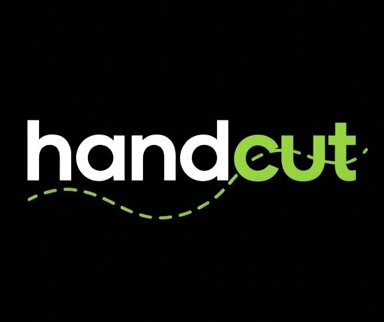
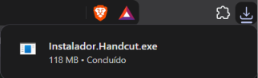
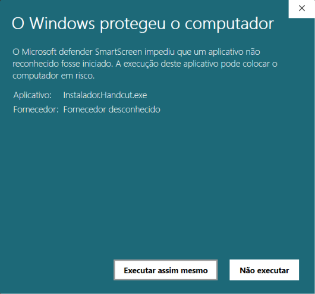
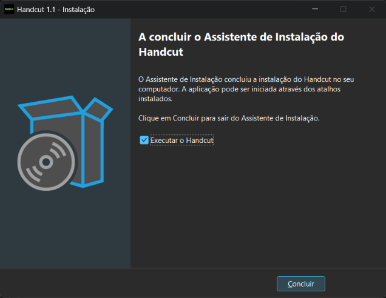

HandcutO Handcut corta os lances que você marca em um jogo de handebol e junta tudo em um único vídeo MP4, pronto para assistir e estudar com a equipe.
Você abre um vídeo de jogo, vê a partida e marca o início e o fim de cada lance. O programa corta os trechos marcados e junta tudo em um único arquivo MP4, que você baixa e guarda onde quiser.
Nossa equipe assiste a jogos próprios e de adversários para estudar erros, acertos e padrões de jogo. Separar os lances à mão, em um vídeo de 10 a 15 minutos, leva horas, às vezes dias. O Handcut nasceu para tirar esse trabalho manual do caminho.
Por enquanto o programa só existe para Windows. A versão para Mac fica para depois.
Use o botão de download no topo da página. O arquivo costuma ir para a pasta Downloads.
Clique no arquivo Instalador.Handcut.exe

O Windows vai perguntar se você quer mesmo abrir o arquivo. Clique em Mais informações > Executar assim mesmo.

Finalize a instalação na janela que vai abrir em seu computador: Seguinte > Instalar > Finalizar > Concluir

Após concluir a instalação, o programa abrirá automaticamente, a não ser que você tenha desmarcado essa opção. Um atalho também será criado na área de trabalho de seu computador.
O Windows pode mostrar a tela “O Windows protegeu o seu computador”, porque o programa ainda não tem assinatura digital, o que é normal para programas de teste.
Os arquivos de trabalho ficam em C:\Users\<seu usuário>\Videos\Handcut (pastas media, exports, temp, bin e o arquivo handcut.log). O botão Limpar arquivos temporários, no rodapé do programa, apaga o que não está em uso, inclusive vídeos exportados. Baixe o que quiser guardar antes de limpar.
| Problema | O que fazer |
|---|---|
| Tela azul “O Windows protegeu o seu computador” | Mais informações → Executar assim mesmo. |
| O antivírus reclama | O programa não é assinado e o antivírus pode estranhar. Libere Instalador.Handcut.exe nas exceções do antivírus. |
| O download do YouTube falha | Clique em Atualizar yt-dlp no rodapé do programa e tente de novo. |
| O vídeo do YouTube está sem som | É o esperado. O programa baixa só o vídeo para ficar mais leve e rápido. |
| A exportação demora | A velocidade depende do computador, da duração dos lances e da resolução. Resoluções menores exportam mais rápido. |
Esta é uma versão de teste. Se for relatar um problema ou o tempo de uso, anote:
Se algo der errado, envie também o arquivo handcut.log, que fica na pasta Videos\Handcut.